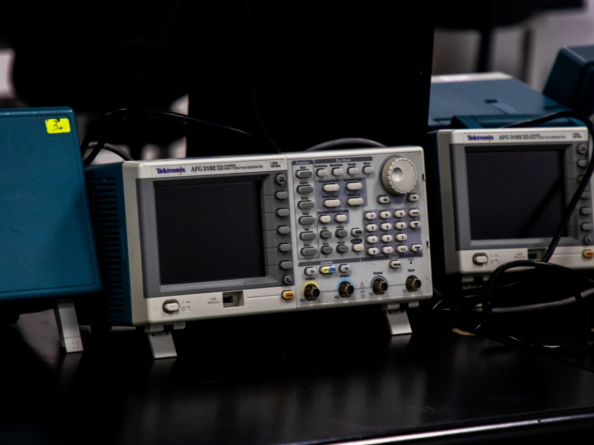

About · the practitioner
A magnetometer is a witness. My job is to cross-examine the room it stands in.
Dr Elias Brandt trained in physics at Jena — a town that has been grinding lenses and doubting measurements for two centuries — and spent nine years with a research group working on spin-exchange relaxation-free (SERF) vapour-cell sensors, followed by four years in industry integrating OPM arrays for survey companies. The industry years taught the lesson this practice is built on: almost every "sensor problem" delivered to a bench is an environment problem wearing the sensor's name.
Brandt Magnetometry was founded in 2016 to work in the honest order: environment first, noise budget second, specification third, hardware last. It is a one-person practice with a bench, a small shielded room, and a short list of collaborators for fieldwork. It stays small on purpose — every noise budget with this practice's name on it was written by the person who will defend it.
The practice works for geophysics and UXO survey contractors, observatories and space-weather programmes, and university groups building biomagnetic research instrumentation. It does not sell certainty, and it does not sell diagnoses.

The working page
How an engagement runs
Four stages, in an order that is not negotiable. Skipping stage one is how a 15 fT sensor ends up reporting a lift motor.
Environment survey
48–72 hours of logging where the instrument will live — your site, your room, your pier. Rail timetables, lift cycles, tram lines, the generator's habits: all of it is recorded as data, because all of it will be in your data.
Noise budget
Every contributor to the floor, itemised and summed: sensor intrinsic noise, room residual, cultural noise, electronics, drift. The budget names the largest term. In six engagements out of forty-one, that term was the building — and the specification shrank accordingly.
Specification
The instrument is specified to the budget, not to a catalogue: channel count, cell geometry, bandwidth, shielding factor. If the budget says a smaller array in a better room beats a larger array in yours, the specification says so too.
Calibration & handover
Calibration against a reference coil and a known field, in your environment, with the conditions written on the certificate. The handover includes the drift model and the recalibration schedule — a calibration without a date for the next one is a rumour.
The honesty page
Sensitivity is a system property
A magnetometer measures the field it is in — all of it: the signal you want, the building it stands in, the lift motor two floors down, the surgeon's trolley in the corridor. The sensor cannot tell them apart. Only the budget can.
That is why this site prints its figures the way it does. The bench's ⁸⁷Rb head is a genuinely quiet sensor — and the same head, unshielded on a weekday, is a 46 pT/√Hz instrument, four thousand times noisier, without a single component changing. Any practice that quotes you the shielded number for an unshielded room is quoting you a horoscope.
Two boundaries, printed plainly. Biomagnetic work here is research instrumentation only — arrays and rooms for studies, never diagnosis, never clinical claims; what a research group concludes from its data is its own regulated business. And survey support is not clearance: a corrected baseline map informs a UXO contractor's own certified processes; it does not replace them.
Fees
Day rates and the fixed report fee are printed on the Systems page. The calibration & report fee is charged on every engagement, including the ones whose conclusion is "buy less".
No success fees
The practice is never paid by outcome — not by anomalies found, not by savings made. A finding is worth what it is worth; the invoice is the same either way.
Availability
Surveys book 3–5 weeks out; array builds run a waitlist. Observatory protocol work is scheduled around the absolute-observation calendar, not around convenience.